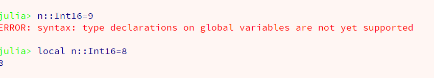
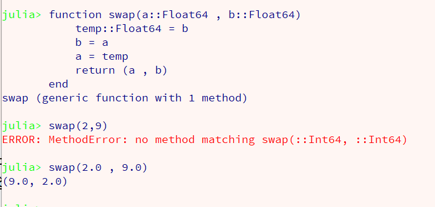
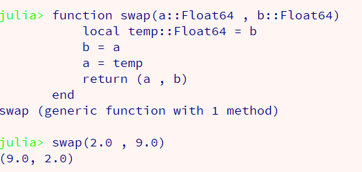
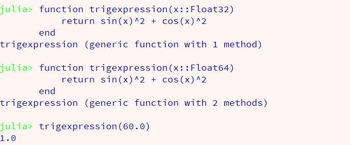
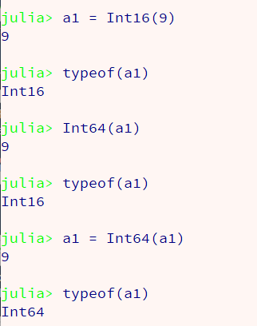

Julia Programlama Dili
Bölüm 2
Veri Tipleri Sistematiği
Sayfa 4
2.3 - Veri Tipi Belirtilmesi ve Dönüştürülmesi
2.3.1 - Veri Tipi Belirtilmesi
Julia programlama dilinin son derece gelişmiş ve daha önceki hiçbir programlama dilinde görülmemiş bir veri tipi sistemi ile donatılmış olduğu daha önce açıklanmıştı. Bu gelişmiş veri sistemi, Julia yorumlayıcısının önceden tanımlanmış veri tipi kodlarının kullanımı ile olağanüstü rahat çalışmasına olanak sağlar. Julia programlama dilinin, yorumlanan bir dil olarak çok yüksek uygulama hızları sağlamasının nedenlerinden biri, bu olağanüstü gelişmiş veri tipi sistematiğidir.
Bu geniş ve karmaşık veri tipilerine sahip olan verilerin sorunsuz olarak ortak aritmetik işlemlere girilebilmesi, Julia programlama diline özgü, şahane bir tip promosyon sistemi sayesinde gerçekleşir. Bu sistemin varlığı sayesinde, Julia programlama dilinde, hiçbir işlemde veri tipi belirtilmesine gerek kalmamaktadır.
Buna rağmen, Julia programlama dilinde, her işlem için, işleme girecek verilerin veri tiplerinin belirtilmesi olanağı bulunmaktadır. Bu bildirim için, :: (çift kolon) (double colon) işlemcisi kullanılır. Örnek:

Ortada kalmış, hiçbir yere bağlı olmayan, n gibi değişkenler, Julia programlama dilinde global değişken olarak kabul edilirler. Bu nedenle, atamada tip belirtilmesini henüz desteklemezler. Bu olay yukarıdaki programda açıkça görülmektedir. Hiçbir yere bağlı olmayan, n adlı değişken için, tanımlama sırasında, uygulanmaya çalışılan veri tipi belirlenmesini Julia yorumlayıcısı, bugün için kabul etmemiştir. Belki ilerideki sürümlerde bu kısıtlama kalkacaktır. Verilen hata mesajında bu bilgi hissedilmektedir.
Oysa, örnek olarak, fonksiyon içi konumlarda yerel değişken olarak tanımlanan n değişkeni için, atanma sırasında veri tipi tanımlanması sorunsuz olarak gerçekleşmektedir. Yerel (lokal) ve genel (global) kapsam (scope) olayları ileride detaylı olarak incelenecektir. İncelenmekte olan konuda, sadece veri tipi tanımlanması üzerinde durulmaktadır.
Bir fonksiyonun tanımı sırasında varsa, argümanlarının (parametrelerinin) alabileceği veri tipinin belitilmesi son derece önemlidir. Fonkssiyonları ayrıca inceleyeceğiz. fakat, konumuz veri tipi tanımlanması olduğu için, bu olayın üzerinde durulması gerekli olmaktadır.
Eğer tanımlanmakta olan bir fonksiyonun argümanları varsa ve eğer bu argümanların veri tipleri fonksiyonun tanımı sırasında belirlenmiş olursa, veri tipi belirtilmiş olan veri tipinden farklı olan, hiçbir veri bu fonksiyonu çalıştıramaz. Bu kısıtlama bazen sıkıcı olabilir. Fakat, özellikle farkında olmadan program içinde veri tipleri değişmiş olan değişkenlerin bu fonksiyonu çağırmaya çalışırken, bir hata fırlatılması, eğer bu hata usulune uygun yakalanabilirse, hayat kurtarıcı olur. Aşağıdaki örnekte bu olgu açıkça gözlenebilmektedir.

Verilen örnekte, bir swap( a,b) fonksiyonu, sadece Float64 tipi verilerle çağrılacak şekilde tanımlanmıştır. Bu fonksiyon, Int64 tipindeki verilerle çağrıldığında bir kuraldışılık (exception) (hata) oluşmuştur. Oysa, örnekten de görülebildiği gibi, aynı fonksiyon, tanımlanmış olduğu gibi, Float64 tipi verilerle sorunsuz olarak çağrılabilmektedir.
Tanımlanmış olan swap() fonksiyonunun içeriğinde, temp adlı bir değişken tanımlanmıştır. Bu değişken, bir fonksiyon içeriğinde tanımlanmış olduğundan, yerel bir değişken niteliğindedir. Bu nedenle, yukarıdaki örnekte de olduğu gibi, tanımında veri tipi belirlenebilmiştir. Eğer temp değişkeninin fonksiyon içinde tanımlanmış olduğu gibi vurgulanmak istenirse, açık (explicit) olarak local olarak tanımlanması yararlı olur. Aşağıdaki örnek, bunu açıklamaktadır.

Bu şekilde, temp değişkeninin dokunulmazlığı garanti edilmektedir. Bu tanımdan sonra, temp değişkeni fonksiyon tanımı dışında tanımlı olmayacak ve ne bilinçli ne de bilinçsiz olarak tanımı değiştirilemeyecektir.
Bir fonksiyonun sadece belirli bir veri tipinde argümanlar ile çağrılabilmesine Julia programlama dilinde, fonksiyonun metodu (çağırma metodu) olarak adlandırılır. Bu isimlendirme Java gibi nesne yönelimli programlama dillerinde, nesneye uygulanan fonksiyonlara, nesnenin metodu adı verildiği için, Julia programlama dilinde tamamı ile farklı bir anlam taşımaktadır.
function swap(a::Float64,b::Float64)
local temp::Float64 = b
b=a
a=temp
return(a,b)
end
function swap(a::Int,b::Int)
local temp::Int = b
b=a
a=temp
return(a,b)
end
(a,b)=swap(12,45)
(x,y)=swap(1.23,6.34)
println("a = $a b = $b\nx = $x y = $y")
Yukarıdaki programda görüldüğü gibi, bir fonksiyon adı aynı olduğu halde, farklı veri tipinde argümanlarla çağrılabilecek şekilde tanımlanabilmektedir. Çok önemli ve Julia programlama dilinin ayrıcalıklarından biri olan bu yönteme, "Çoklu İletişim" (Multiple Dispatch) adı verilir.
Örnek olarak basit bir çoklu iletişim sistemini REPL üzerinde deneyelim:

Görüldüğü gibi, Julia yorumlayıcısı, argümanları farklı veri tipinde tanımlanan bir fonksiyon için, her farklı veri tipi tanımını farklı metotlar olarak algılamaktadır. Bu şekilde trigexpression fonksiyonu, 2 metotlu bir fonksiyon olarak bellekte saklanmaktadır. Metotlardan ilki, 32 bitlik ikincisi ise 64 bitlik ondalıklı sayı ile çağırma yöntemleri olarak belirlenmiştir.
Çağrılan trigexpression(60) sonucunun 1.0 olması, Julia yorumlayıcısının yüksek duyarlıkla hesaplama yeteneğinin bir göstergesidir.
Julia programlama dilinde, tanım sırasında veri tipinin belirtilmesi hiçbir zaman gerekli bir işlem değildir. Grek klayden girilen, gerekse dosyalardan okunun veriler, Julia yorumlayıcısı tarafından, işletim sitemi ve makine niteliklerine göre belirli bir varsayılan veri değerleri olarak algılanır. Julia öntanımlı fonksiyonları varsayılan veri tipleri ile sorunsuz çalışabilecek şekilde çoklu iletişim sağlayabilecek şekilde oluşturulmuş olduklarından, öntanımlı fonksiyonların çağrılması için, veri tipi belirtilmesine gerek kalmamaktadır. Programlarda hesapların sorunsuz yürütülmesini sağlamak amacı ile, Julia yorumlayıcısın bir otomatik tip yükselteme sistemi bulunmaktadır. Bu tip yükseltme sistemi, hesaplara katılan tüm verileri ortak bir veri tipinde buluşturmaya ve hesap sonuçlarını oluşturmaya çalışır. Bu işleme uygun veriler arasında tip yükseltme (type promotion) işlemine uygun olanlar için bu yöntem başarılı olur ve hesap sonuçları oluşturulabilir. Birbirleri ile uyumsuz veri tiplerinin iştirak ettiği işlemlerde tip yükseltme çabaları başarılı olmaz ve bir hata mesajı ile programın çalışması durdurulur.
Programın ilk sürümlerinde programcı, programın çalışmasına odaklanmalıdır. Bunun için, hesaplamalarda uyumlu veri tipleri kullanılmalı, fakat bu verilerin varsayılan tipleri ile yetinmeli ve tip belirtilmesine girilmemelidir. Başlangıçta önemli olan, programın doğru sonuç vermesidir. Programın ilk aşamalarında doğru sonuç vermesi sağlandığında, ileri sürümlerinde hata yakalama yöntemleri eklenerek sağlamlık veri tipleri belirtilerek programın daha kontrollü bir şekilde çalışması ve daha etkili yöntemler denenerek optimizasyon denenebilir. C.A.R. Hoare, "Başlangıçta optimizasyon, her türlü kötülüğün kaynağıdır." uyarısını yapmıştır. Bu uyarıya kulak vererek, başlangıçta veri tipi tanımlarından kaçınmakta yarar bulunmaktadır.
2.3.2 - Veri Tipi Dönüştürülmesi
Veri tiplerinin birbirlerine dönüştürülmesi çoğunlukla basit bir iş gibi görülebilmesine karşın, bir programlama dili için olağanüstü önemli bir işlemdir. Öneminin vurgulanması için, ARIANE5 füzesinin çıkışta patlaması, Londra borsasının Linux'a dönüşümü sırasındaçakılması, MR cihazlarında hastanın yaşamını tehlikeye atan yanlış işlemler hep bu veri dönüştürme işlemlerinde beklenmedik sonuçlar oluşmasından kaynaklanmıştır.
Program tasarımlarının, veri dönüştürme gerekmeyecek şekilde yapılması temel hedef olmalıdır. Genellikle veri uyumsuzlukları, başka programlar tarafından kaydedilmiş veri dosyalarının okunması ile ortaya çıkar. Bu gibi veri dosyalarının, yardımcı programlarla okunması ve okunan verilerin ana programın kullanımına açılması, birçok sorunun daha oluşmadan ortadan kaldırılmasına olanak sağlar.
Julia programlarında, artık çoğu ciddi sistemler 64 bitlik işletim sistemleri ile çalıştığından, tamsayılar için Int (Int64'ün kısa adı) (alias Int64), ondalıklı sayıları da Float64 olarak kullanmak birçok uyumsuzluk sorununu daha oluşmadan engelleyebilir. Bu veri tipleri de Julia yorumlayıcısı tarafından, tam ve ondalıklı sayı tipleri için varsayılan veri tipleri sayıldığından, durup dururken kendi seçtiğimiz veri tipni itiştirmeye çalışmak gereksiz ve boş bir çaba sayılabilir. veri tipleri ile ancak çok gerekirse oynanmalıdır. Aksi halde birçok gereksiz uyumsuzluklar oluşabilir.
Veri tiplerinin dönüştürülmesi, sık kullanım için değil, ancak bir sorun çıkarsa uygulanacak bir yöntem olarak konulmuştur. Veri tipleri basitçe,
dönüştürülecek veritipi(dönüşecek veri)
olarak uygulanabilir. Bu konuda, öntanımlı bir fonksiyon,
convert( dönüştürülecek veritipi , dönüşecek veri)
olarak kullanılır. Her iki yöntem de önceden incelenmişti. Burada daha detaylı bir tanıtım yapmaya çalışacağız.
İlk olarak, Int16 veri tipinde, değeri 9 olan, bir a1 değişkeni yaratalım,
julia>a1 = Int16(9;) <---(Enter)
İlk bakışta kolay ve basit görülen bu atamanın oluşum şekli çok basit değildir. Burada, ,lk olarak değeri 9 olan ve veritipi varsayılan olarak Int64 olan bir değer oluşturuluyor. Bu değerin veri tipi Int16 veri tipine döndürülüyor. Daha sonra veri tipi Int16 ya dönüştürülmüş olan bu değer, erişim adresi bir hex sayı olan, belirli bir bellek alanına yerleştiriliyor. Bu bellek alanına erişimin kolaylaştırılması için, bellek erişim adresi olan hex sayısının a1 olarak adlandırılan bir eş ismi (alias) yaratılıyor. Artık, her a1 değişkeni çağrıldığında, eriştiği bellek alanında bulunan geçerli değere ulaşılmış oluyor.
Görüldüğü gibi bu oldukça detaylı bir mekanizmadır. Bu işlemde önemli olan 9 olarak girilen değerin veri tipinin, Julia yorumlayıcısınca, çalışılan makine işletim sistemine uygun olarak, Int64 olarak algılanmasıdır. Eğer oluşturulacak olan veri tipinin 16 bitlik tamsayı veri tipi olması istenmeseydi, doğrudan atama gerçekleştirilebilirdi.
julia>a1 = 9; <---(Enter)
Oysa, atanacak verinin 16 bitlik tamsayı tipinde olması istendiği için, oluşmuş olan değer, 16 bitlik tamsayı veri tipine dönüştürüldükten sonra, kalıcı bellek alanına yerleştirilmiş olmaktadır.
Bir değerin geçici bellek alanında oluşturulması ayrı bir aşamadır, geçici bellekte oluşmuş olan değerin kalıcı bellek alanına kaydedilerek ileride kullanılabilecek duruma getirilmesi ayrı bir aşamadır. Bir değerin geçici bellek alanında oluşturulması,
julia>9<---(Enter)
9
şeklinde olur. Oluşan değer geçici bellek alnıda oluşmuştur. Görüntüsü geçicidir. Bir sonraki program adımı aynı geçici bellek alanına yazar ve bir önceki 9 değeri kaybolur.
Oluşturulan değerin kalıcı olabilmesi için mutlaka adresi belli bir sabit bellek alanına yerleştirilmesi gerekir. Değişken adı a1 bu görevi yapar ve her a1 çağrıldığında a1 'in eriştiği bellek alanında kayıtlı değere erişilir. Anahtar bilgi, bir kez belirli bir bellek alanına kaydedilmiş verinin, silinmedikçe veya üstüne yeni bir değer yazılmadıkça, program sonuna kadar değişmeden kalacağıdır.
Bu işlemde üstüne yazmak olayı da ayrı dikkat isteyen bir konudur. Bazen belirli bir değişken adı çağrılarak erişilebilecek bir bellek alanına yazılmış veri değerinin yenilenmesi gerekir. Bu bellek alanına erişim değişkeni a1, değeri kullanılarak bu bellek alanına erişilebilir ve eski değer yerine yeni değer yerleştirilebilir. Buna değişken değerinin yenilenmesi adı verilir. Atamada değişken adına bir değer yerleştirilmez. Değer, değişken adı le erişilebilecek kalıcı bellek alanına yazılır.
Değer dönüştürme işleminde, bu bilgiler, yaşamsaldır. Aşağıdaki uygulama izlendiğinde, bu bilgilerin ne kadar önemli olduğu görülür.

Buraya kadar açıklanmış olan tüm mekanizmalar, yukarıdaki örnekte görülmektedir. İlk adım verinin, a1 ile erişilebilen kalıcı bellek alanına yerleştirilmesidir.
İkinci adım çok ilginçtir. Bu aşamada, a1 değişkeninin eriştiği bellek alanında bulunan veri çağrılmış ve bu veri 64 bitlik tamsayı değerine dönüştürülmüştür. Sonuç satırından da izlenebileceği gibi, bu dönüşüm gereçekleşmiştir. Ama ne yazık ki bu veri dönüşümü, geçici bellek alanında oluştuğu için kalıcılığı yoktur. bir sonraki işlem, a1 değişkeni ile erişilebilen bellek alanında bulunan veri tipinin belirlenmesi istemidir.
Bu veri tipinin hala 16 bitlik tamsayı tipi olması, yeterli bilgisi olmayan birçok izleyici için şaşkınlık verici bir sonuç olacaktır. Oysa yeterli bilgisi olanlar için, şakınlık verecek hiçbir şey yoktur. Bir önceki işlemde, a1 ile ağrılan veri geçici bellek alanında yeni bir veri tipine dönüştürülmüş, bu işlem geçici bellekte (on the fly) oluştuğu için klıcılığı olmamıştır. Kalıcılığı olmamasının nedeni, a1 bellek alanında bulunan verinin hiçbir yenilenme geçirmemiş, aynen kayıtlı olduğu gibi kalmış olmasıdır. Bu nedenle, a1 ile erişilen bellek alanında bulunan verinin veri tipi sorulduğunda, başlangıçta atanmış ve henüz değişmemiş olan veri tipi yanıt olarak verilmiştir. Veri tipi değişiminin kalıcı olabilmesi için, a1 ile ile erişilebilen bellek alanındaki verinin yenilenmesi gerekir.
Bu yenilenme, son aşamada gerçeklştirilmiş ve geçici bellekte oluşan yeni değerin a1 bellek alanına yerleştirilmesi yapılmıştır. Bu şekilde kalıcı hale gelmiş olan yenilenmiş değerin veri tipi sorgulandığında Int64 olarak yeni veri tipi yanıt olarak verilmişir.
Istenen her veripi dönüşümü gerçekleşemeyebilir. Örnek olarak, sözel veriler (String) sayısal veri tiplerine dönüştürülemez. Sayısal veri tiplerinin birbirlerine dönüştürülebilmesi duyarlık kaybı yaşanacaksa gerçeklşemez. Örnek olarak Int6 4(93.9) döşümü gerçekleşemez. Fakat, duyarlık kaybı yaşanmayacak Int64(93.00) dönüşümü gerçekleşir.
Julia programlama dilinde, kullanıcılar kendilerine özgü dönüştürme programları oluşturabilirler. Bu ve benzeri standart dışı programlar ancak çok gereksinme olunca oluşturulmalıdırlar.
Julia yorumlayıcısı, hesaplamaların yürütülebilmesi için ortak bir veri tipine dönüştürebilecek tip yükseltme sistemine sahiptir. Bu yükselteme sistemi el ile promote (öge1,öge2,....,öge n) olarak çağrılabilen öntanımlı bir fonksiyon da verilmiştir. Buna rağmen, sadece tip dönüşümü mümkün değişik tipte ögelerin iştirak ettiği ifadelerde, promosyon otomatik olarak sağlandığından, açık (explicit) promote() fonksiyonun çağrılmasına gerek kalmayacaktır.
Özetle, çok kesin gereksinmeler olmadıkça, Julia yorumlayıcısının algıladığı veri tipi sistemlerinin benimsenmesinde yarar bulunmaktadır. Bu şekilde değişik veri tiplerinin kullanımının sakıncalarından korunulmuş olacak ayrıca Julia yorumlayıcısının aşırı yüklenmesi engellenecektir.
Created With Microsoft Expression Web 4